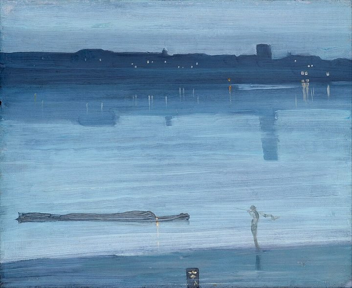

First view · On view today
Atrium
Open today 10:00–18:00 · three exhibitions


Detail · Artwork in Night Works
Room 8 · Night Works

Nocturne: Blue and Gold – Old Battersea Bridge
James McNeill Whistler · c. 1872–75
Audio guide · Stop 23
1:124:08
About this work
Whistler painted the old wooden bridge from memory, at dusk, raising its single pier until it frames the river like a Japanese woodblock print. The fireworks over Cremorne Gardens fall as a few flecks of gold.
- Medium
- Oil on canvas
- Size
- 68.3 × 51.2 cm
- Location
- Floor 2 · Room 8
Next in this room
Nocturne in Black and Gold: The Falling Rocket
Whistler · 1875

Nocturne: Blue and Silver – Chelsea
Whistler · 1871